피드백을 반영한 Godot UI
아래 이미지는 별도의 디자인 모형이 아닌 게임에서 사용하는 실제 Godot 화면 클래스를 렌더링한 캡처입니다. 기존 시안의 분위기를 유지하면서 선택 목록·상세 정보·성장·자료집·설정·HUD를 실제 게임에 연결했습니다.
선택 카드의 배경을 고정하고, HUD 재화와 무기를 한 행으로 정리했습니다. 상점은 13px 효과 설명·본문 내부 스크롤 없는 4개 진열·상품 오른쪽 위 잠금을 적용했습니다. HP·음량 소재는 고밀도 PNG로 교체했으며, 화면을 가리는 툴팁을 제거했습니다.
확인은 필요한 가져오기·스크립트 오류, 화면 배치, UI 입력과 값 갱신 범위에 한정했습니다. 목록 드래그와 클릭 구분, 스크롤 위치 유지, 잠금 상세 검토, HUD 레벨 갱신을 확인했습니다. 아이템 55종과 무기 10종의 상점 전체 문구, 구매·잠금·리롤의 네이티브 콜백, HSlider 음량 즉시 반영도 확인했습니다.
실제 적용한 변경 화면 11종
전투 HUD
왼쪽 위 얇은 HP 바, 그 아래 재화·무기 6개 한 행과 흰색 현재 레벨, 중앙 웨이브·시간.
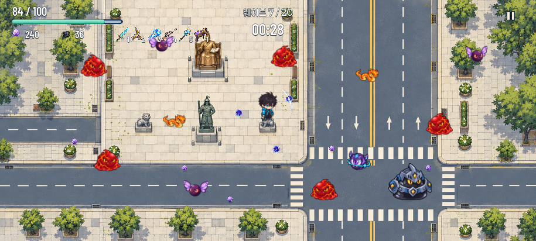
915×412 · 01-hud.png · 이미지를 누르면 원본 크기로 열립니다.
맵 선택
실제 지역 원화와 작전 설명을 분리한 독립 화면.
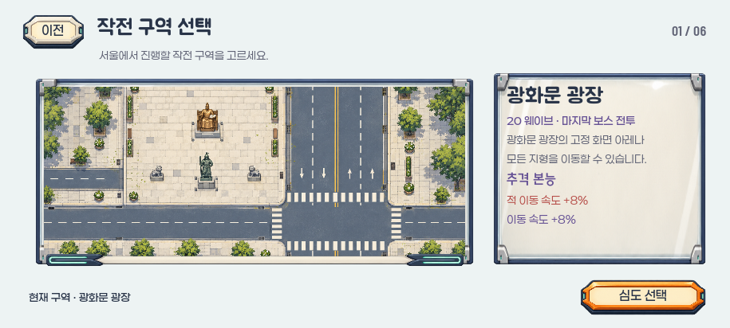
915×412 · 02-map.png · 이미지를 누르면 원본 크기로 열립니다.
심도 선택
심도 번호·선택·잠금·클리어 상태와 실제 배율.
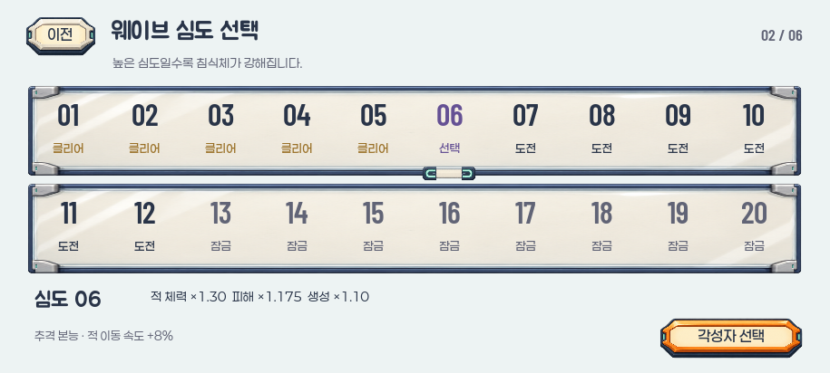
915×412 · 03-depth.png · 이미지를 누르면 원본 크기로 열립니다.
각성자 선택
4열 세로 스크롤 목록과 오른쪽 큰 상세 정보판.

915×412 · 04-character.png · 이미지를 누르면 원본 크기로 열립니다.
시작 무기 선택
시작 무기 7종과 오른쪽 역할·공격 정보.

915×412 · 05-weapon.png · 이미지를 누르면 원본 크기로 열립니다.
단군의 축복 선택
축복 없음과 7종 선택, 오른쪽 보유 단계별 효과.

915×412 · 06-blessing.png · 이미지를 누르면 원본 크기로 열립니다.
편성 확인
지역·심도·각성자·무기·축복·주간 규칙을 하나의 작전 정보판으로 정리.
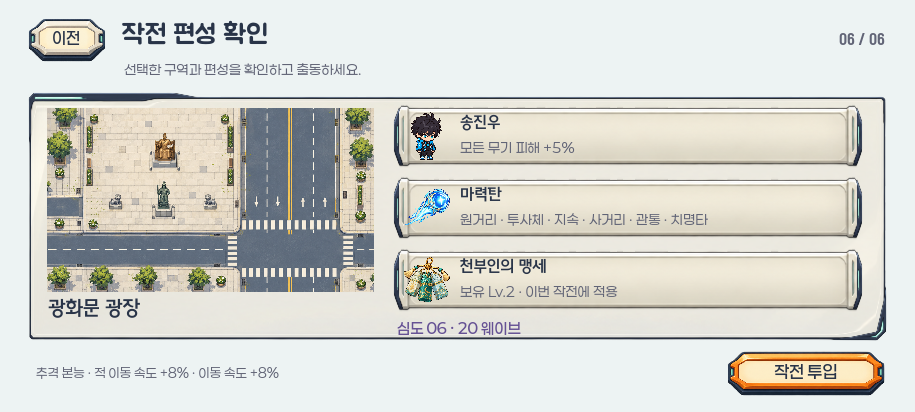
915×412 · 07-formation.png · 이미지를 누르면 원본 크기로 열립니다.
영구 성장
왼쪽 세로 목록과 오른쪽 원화·현재 단계·조각·실제 성장 비용.
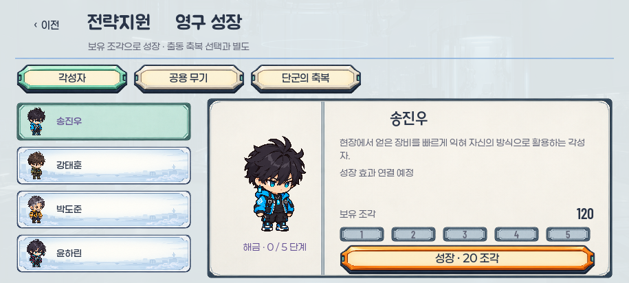
915×412 · 08-growth.png · 이미지를 누르면 원본 크기로 열립니다.
자료집
5열 썸네일 목록과 책등 안쪽 48px 여백을 확보한 상세.
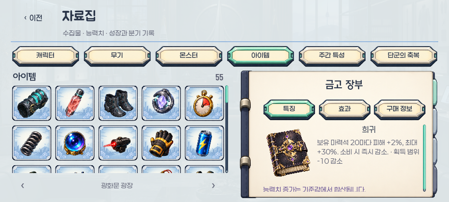
915×412 · 09-archive.png · 이미지를 누르면 원본 크기로 열립니다.
설정
중앙 정렬한 제목과 새 PNG 음량 트랙·채움·원형 손잡이.
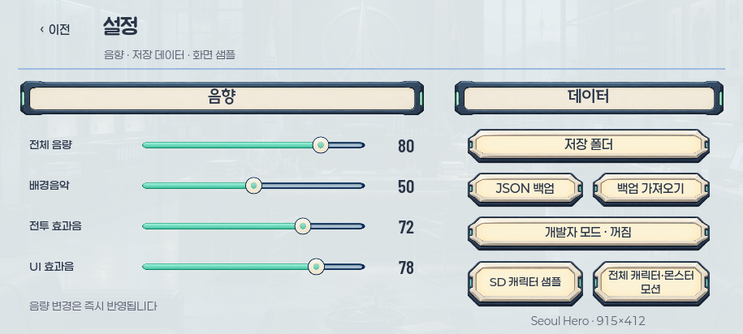
915×412 · 10-settings.png · 이미지를 누르면 원본 크기로 열립니다.
일시정지
중앙에 맞춘 제목·정보·버튼 묶음.
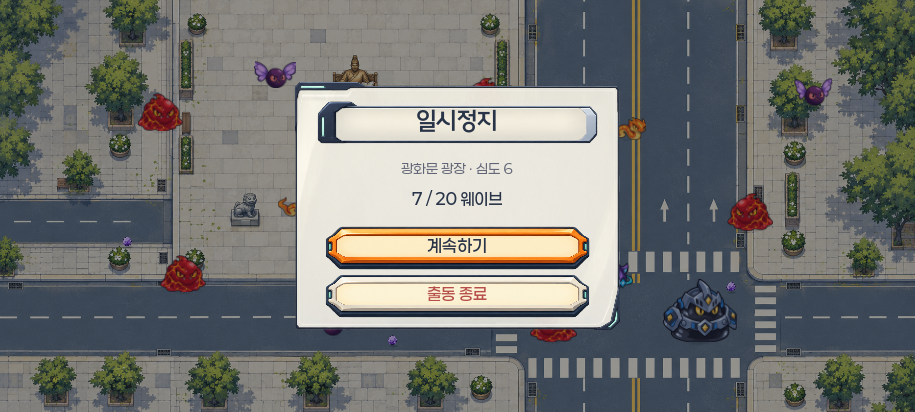
915×412 · 11-pause.png · 이미지를 누르면 원본 크기로 열립니다.
기존 승인 화면
타이틀·로비·상점은 승인한 구성을 바탕으로 최신 피드백을 반영한 실제 화면입니다.
기존 승인 타이틀
승인한 로고·전투 원화·입장 버튼을 유지.
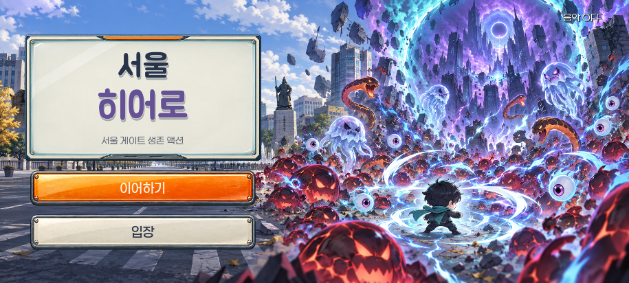
915×412 · approved-title.png · 이미지를 누르면 원본 크기로 열립니다.
기존 승인 로비
승인한 배경·환경 효과·독립 유리 메뉴 유지. 상단 자료집·설정·음악은 개별 프레임 없는 문자 버튼.
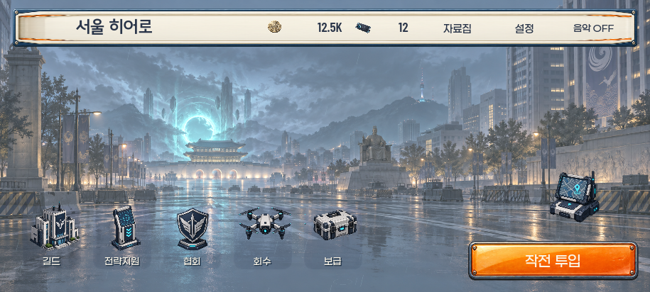
915×412 · approved-lobby.png · 이미지를 누르면 원본 크기로 열립니다.
기존 승인 상점
상품 4개 한 줄 유지. 13px 효과·패널티를 내부 스크롤 없이 표시하고 잠금을 상품 오른쪽 위로 이동.
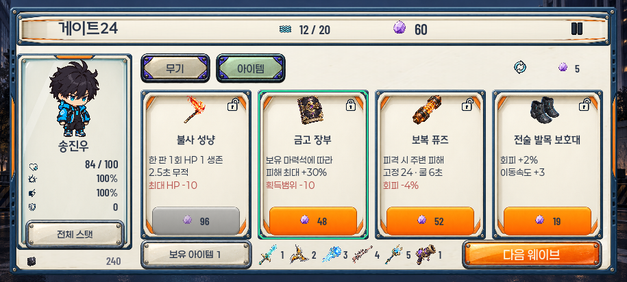
915×412 · approved-shop.png · 이미지를 누르면 원본 크기로 열립니다.
조건별 실제 표시
HUD · 낮은 HP와 큰 재화
낮은 HP, 큰 재화 숫자, 서로 다른 무기 레벨.
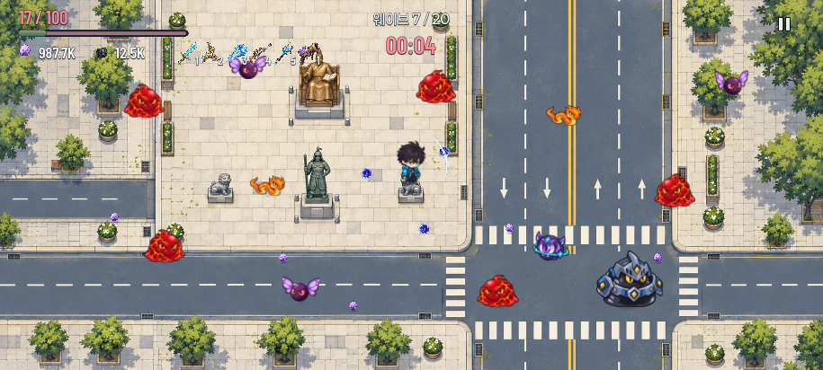
915×412 · qa-hud-low-large.png · 이미지를 누르면 원본 크기로 열립니다.
미회수 마력석 목적지
실제 미회수 지갑 표시와 마력석 비행 목적지.
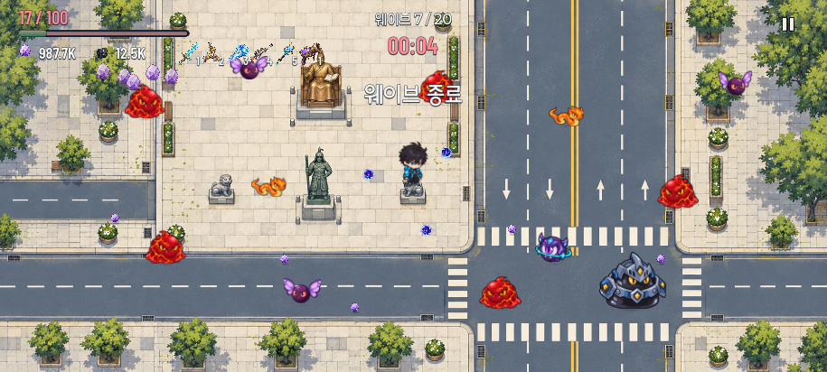
915×412 · qa-hud-post-wave-wallet.png · 이미지를 누르면 원본 크기로 열립니다.
각성자 · 미해금 상세
미해금 각성자를 검토해도 출동 선택은 변경하지 않음.
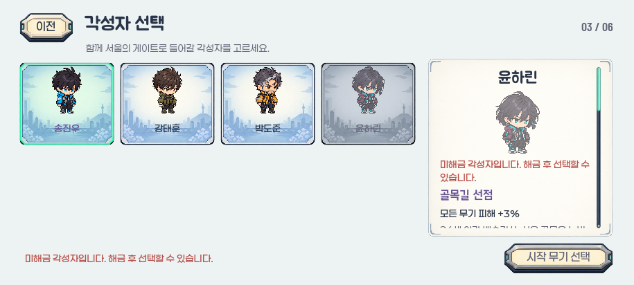
915×412 · qa-character-locked.png · 이미지를 누르면 원본 크기로 열립니다.
시작 무기 · 미해금 상세
잠금 사유와 실제 무기 정보를 함께 표시.
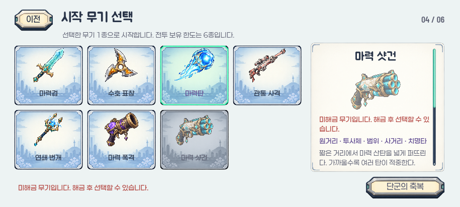
915×412 · qa-weapon-locked.png · 이미지를 누르면 원본 크기로 열립니다.
축복 · 잠금 상세
잠금 상태의 축복 상세와 선택 제한.
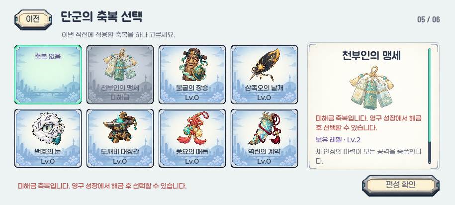
915×412 · qa-blessing-locked.png · 이미지를 누르면 원본 크기로 열립니다.
축복 없음
축복 없이 출동하는 독립 선택 화면.
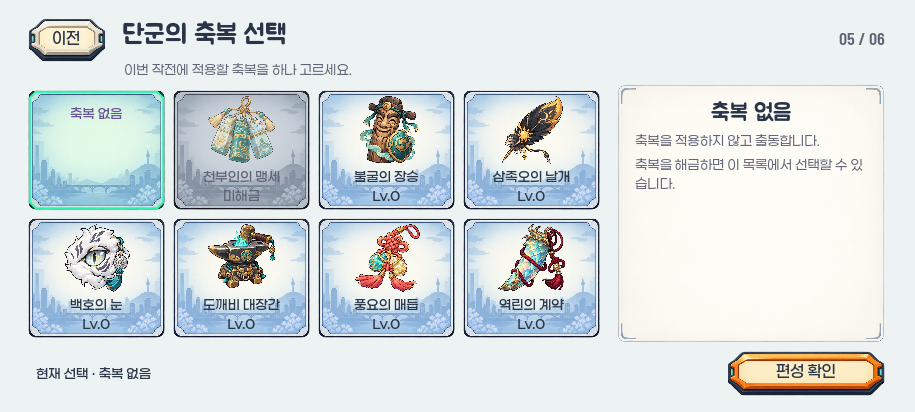
915×412 · qa-blessing-none.png · 이미지를 누르면 원본 크기로 열립니다.
축복 미보유
보유 축복이 없어도 축복 화면을 표시.
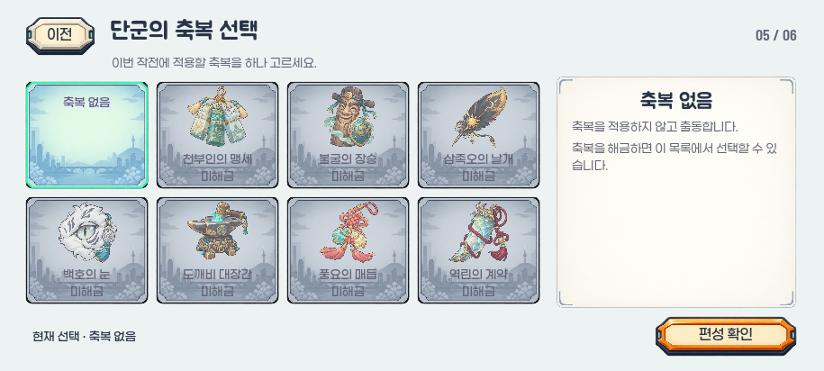
915×412 · qa-blessing-unowned.png · 이미지를 누르면 원본 크기로 열립니다.
공용 무기 성장
실제 단계·보유 조각·다음 비용을 표시.
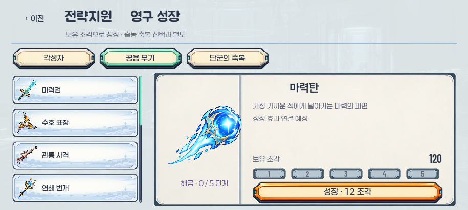
915×412 · qa-growth-weapon.png · 이미지를 누르면 원본 크기로 열립니다.
축복 영구 성장
실제 축복 효과와 영구 성장 정보.
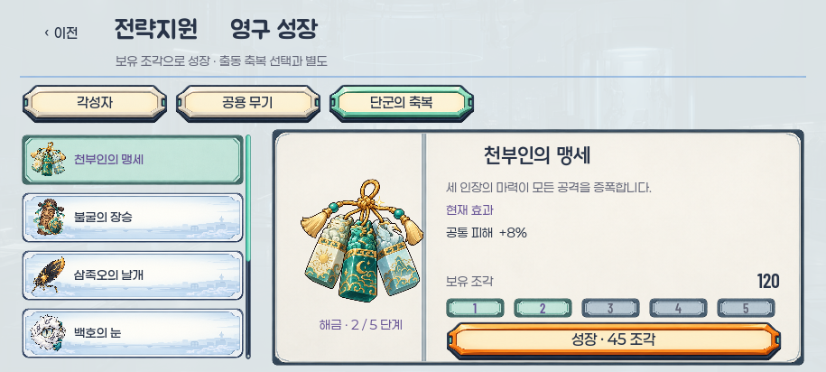
915×412 · qa-growth-blessing.png · 이미지를 누르면 원본 크기로 열립니다.
성장 · 조각 부족
조각 부족에 따른 실제 비활성 상태.
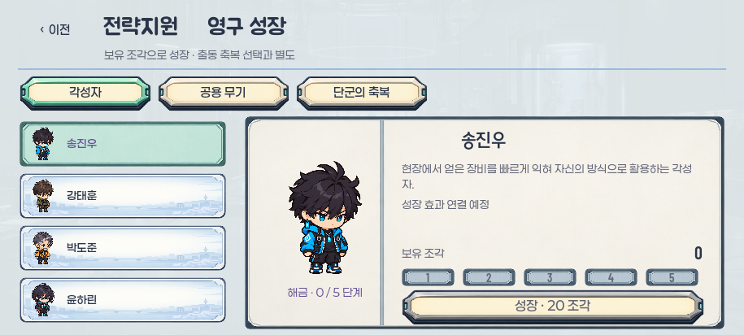
915×412 · qa-growth-insufficient.png · 이미지를 누르면 원본 크기로 열립니다.
후속 피드백 · 조건별 확인
선택 전후 · 고정 카드 배경 6개 펼치기
각성자 · 선택 전
선택 카드와 오른쪽 상세는 갱신되고 광화문 카드 배경의 원본 크롭과 배치는 유지됩니다.
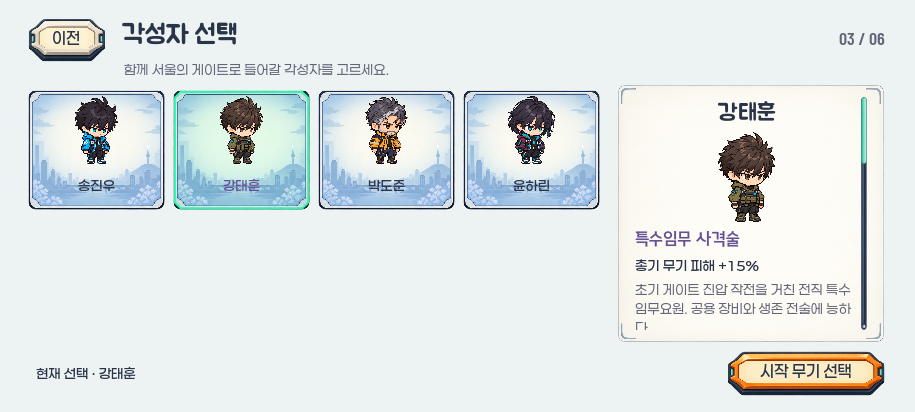
915×412 논리 화면 · 915×412 원본 · qa-selection-character-before.png · 이미지를 누르면 원본 크기로 열립니다.
각성자 · 다른 카드 선택 후
선택 카드와 오른쪽 상세는 갱신되고 광화문 카드 배경의 원본 크롭과 배치는 유지됩니다.
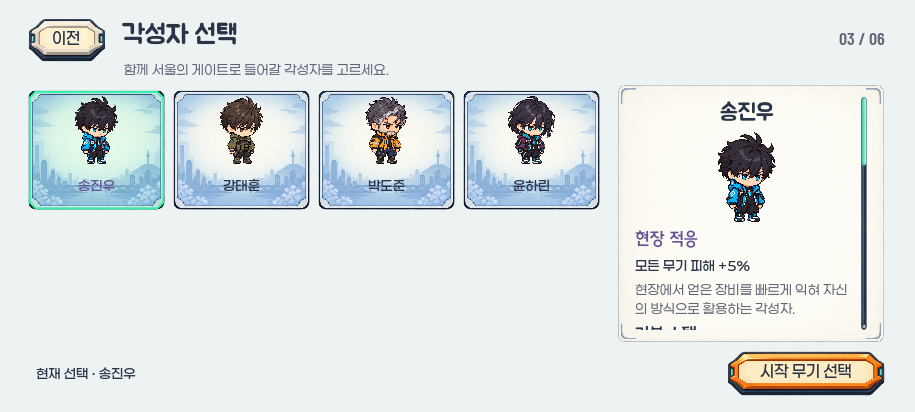
915×412 논리 화면 · 915×412 원본 · qa-selection-character-after.png · 이미지를 누르면 원본 크기로 열립니다.
시작 무기 · 선택 전
선택 카드와 오른쪽 상세는 갱신되고 광화문 카드 배경의 원본 크롭과 배치는 유지됩니다.
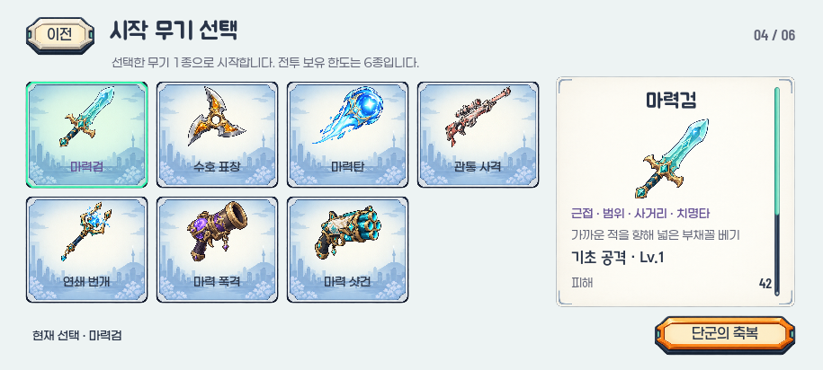
915×412 논리 화면 · 915×412 원본 · qa-selection-weapon-before.png · 이미지를 누르면 원본 크기로 열립니다.
시작 무기 · 다른 카드 선택 후
선택 카드와 오른쪽 상세는 갱신되고 광화문 카드 배경의 원본 크롭과 배치는 유지됩니다.
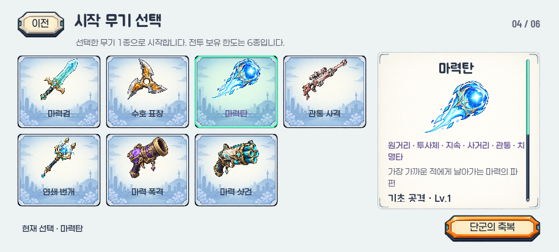
915×412 논리 화면 · 915×412 원본 · qa-selection-weapon-after.png · 이미지를 누르면 원본 크기로 열립니다.
단군의 축복 · 선택 전
선택 카드와 오른쪽 상세는 갱신되고 광화문 카드 배경의 원본 크롭과 배치는 유지됩니다.
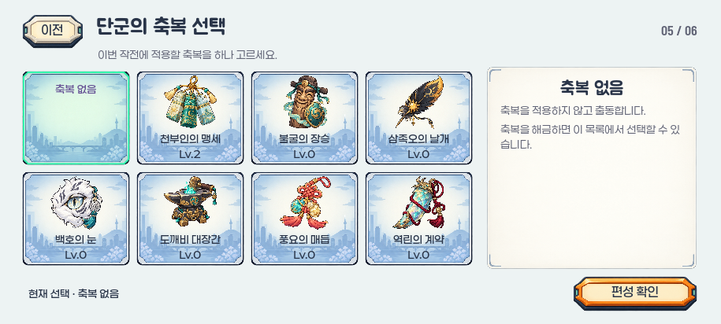
915×412 논리 화면 · 915×412 원본 · qa-selection-blessing-before.png · 이미지를 누르면 원본 크기로 열립니다.
단군의 축복 · 다른 카드 선택 후
선택 카드와 오른쪽 상세는 갱신되고 광화문 카드 배경의 원본 크롭과 배치는 유지됩니다.
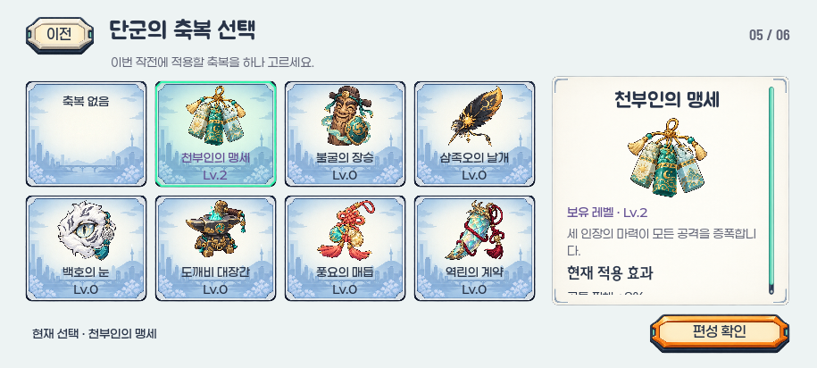
915×412 논리 화면 · 915×412 원본 · qa-selection-blessing-after.png · 이미지를 누르면 원본 크기로 열립니다.
상점 · 무기·구매 불가·8자리 가격 3개 펼치기
상점 · 무기 상품
무기 4개 한 줄 · 13px 효과 설명 · 상품 본문 내부 스크롤 없음 · 오른쪽 위 잠금.
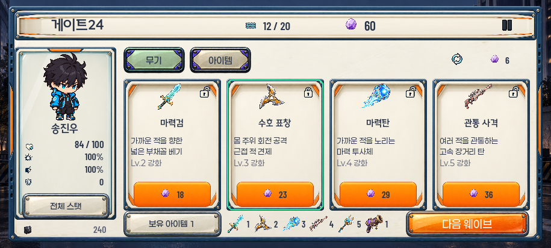
915×412 논리 화면 · 915×412 원본 · qa-shop-weapons.png · 이미지를 누르면 원본 크기로 열립니다.
상점 · 구매 불가
실제 구매 제한과 진열 유지 잠금 상태를 분리합니다. 구매·잠금 조작 영역은 44px입니다.
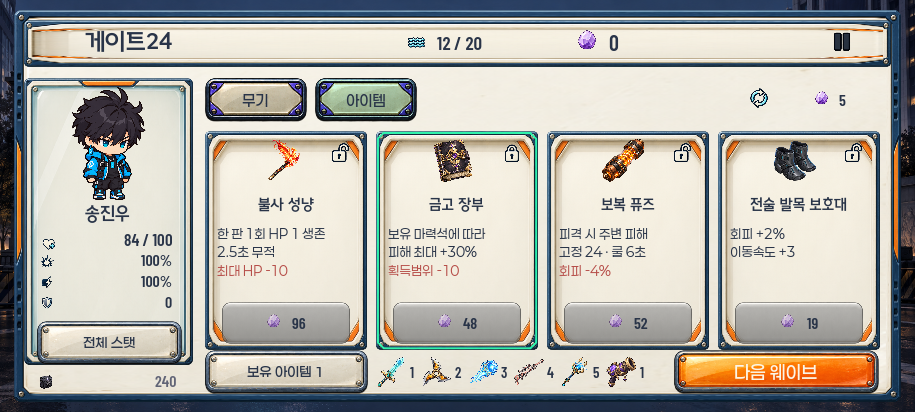
915×412 논리 화면 · 915×412 원본 · qa-shop-disabled.png · 이미지를 누르면 원본 크기로 열립니다.
상점 · 정확한 8자리 가격
8자리 가격을 축약하지 않고 구매 버튼에 표시합니다. 효과·패널티도 해당 영역에서 모두 읽을 수 있습니다.
915×412 논리 화면 · 915×412 원본 · qa-shop-eight-digit-price.png · 이미지를 누르면 원본 크기로 열립니다.
HP·음량 0·50·100% · 1배/2배 픽셀 밀도 12개 펼치기
HP · 0% · 1배 픽셀 밀도
실제 네이티브 HP 바의 0·50·100% 채움과 고밀도 PNG 선명도를 확인합니다.
915×412 논리 화면 · 915×412 원본 · qa-hp-0-1x.png · 이미지를 누르면 원본 크기로 열립니다.
음량 · 0% · 1배 픽셀 밀도
실제 HSlider 조작이 설정값과 오디오 버스에 즉시 반영됩니다. 청감 확인은 포함하지 않습니다.
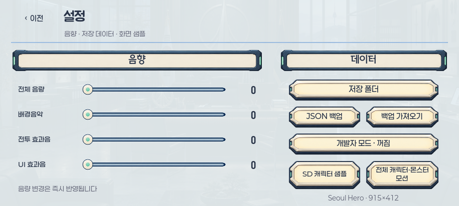
915×412 논리 화면 · 915×412 원본 · qa-volume-0-1x.png · 이미지를 누르면 원본 크기로 열립니다.
HP · 0% · 2배 픽셀 밀도
실제 네이티브 HP 바의 0·50·100% 채움과 고밀도 PNG 선명도를 확인합니다.
915×412 논리 화면 · 1830×824 원본 · 2배 픽셀 밀도 · qa-hp-0-2x.png · 이미지를 누르면 원본 크기로 열립니다.
음량 · 0% · 2배 픽셀 밀도
실제 HSlider 조작이 설정값과 오디오 버스에 즉시 반영됩니다. 청감 확인은 포함하지 않습니다.
915×412 논리 화면 · 1830×824 원본 · 2배 픽셀 밀도 · qa-volume-0-2x.png · 이미지를 누르면 원본 크기로 열립니다.
HP · 50% · 1배 픽셀 밀도
실제 네이티브 HP 바의 0·50·100% 채움과 고밀도 PNG 선명도를 확인합니다.
915×412 논리 화면 · 915×412 원본 · qa-hp-50-1x.png · 이미지를 누르면 원본 크기로 열립니다.
음량 · 50% · 1배 픽셀 밀도
실제 HSlider 조작이 설정값과 오디오 버스에 즉시 반영됩니다. 청감 확인은 포함하지 않습니다.
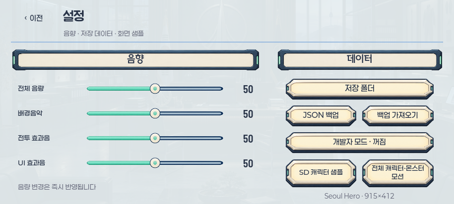
915×412 논리 화면 · 915×412 원본 · qa-volume-50-1x.png · 이미지를 누르면 원본 크기로 열립니다.
HP · 50% · 2배 픽셀 밀도
실제 네이티브 HP 바의 0·50·100% 채움과 고밀도 PNG 선명도를 확인합니다.
915×412 논리 화면 · 1830×824 원본 · 2배 픽셀 밀도 · qa-hp-50-2x.png · 이미지를 누르면 원본 크기로 열립니다.
음량 · 50% · 2배 픽셀 밀도
실제 HSlider 조작이 설정값과 오디오 버스에 즉시 반영됩니다. 청감 확인은 포함하지 않습니다.
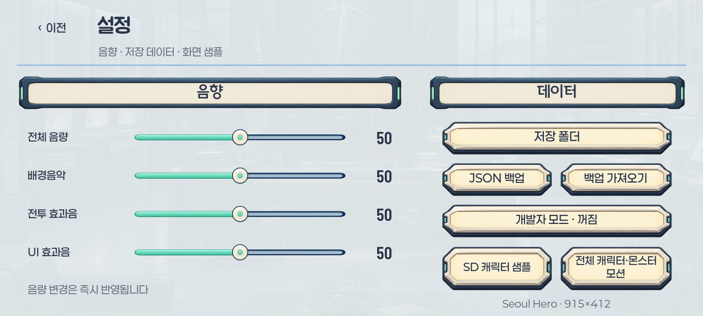
915×412 논리 화면 · 1830×824 원본 · 2배 픽셀 밀도 · qa-volume-50-2x.png · 이미지를 누르면 원본 크기로 열립니다.
HP · 100% · 1배 픽셀 밀도
실제 네이티브 HP 바의 0·50·100% 채움과 고밀도 PNG 선명도를 확인합니다.
915×412 논리 화면 · 915×412 원본 · qa-hp-100-1x.png · 이미지를 누르면 원본 크기로 열립니다.
음량 · 100% · 1배 픽셀 밀도
실제 HSlider 조작이 설정값과 오디오 버스에 즉시 반영됩니다. 청감 확인은 포함하지 않습니다.
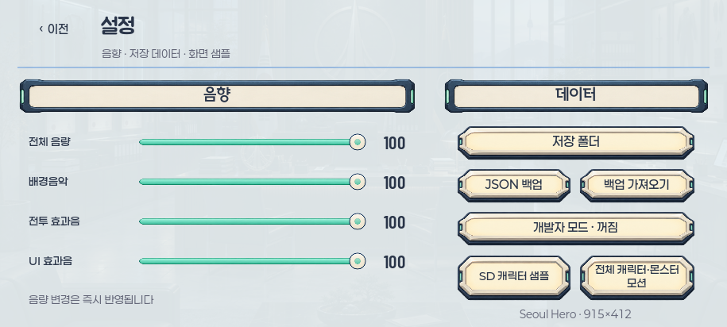
915×412 논리 화면 · 915×412 원본 · qa-volume-100-1x.png · 이미지를 누르면 원본 크기로 열립니다.
HP · 100% · 2배 픽셀 밀도
실제 네이티브 HP 바의 0·50·100% 채움과 고밀도 PNG 선명도를 확인합니다.
915×412 논리 화면 · 1830×824 원본 · 2배 픽셀 밀도 · qa-hp-100-2x.png · 이미지를 누르면 원본 크기로 열립니다.
음량 · 100% · 2배 픽셀 밀도
실제 HSlider 조작이 설정값과 오디오 버스에 즉시 반영됩니다. 청감 확인은 포함하지 않습니다.
915×412 논리 화면 · 1830×824 원본 · 2배 픽셀 밀도 · qa-volume-100-2x.png · 이미지를 누르면 원본 크기로 열립니다.
자료집 전체 분류·상세 탭
6개 분류 · 21개 상세 화면 펼치기
자료집 · 각성자 / 배경
실제 분류·상세 탭의 콘텐츠를 표시.
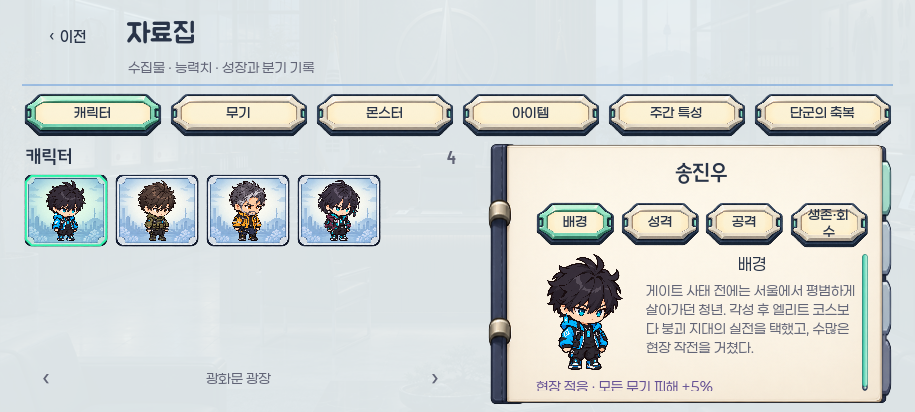
915×412 · qa-archive-characters-0.png · 이미지를 누르면 원본 크기로 열립니다.
자료집 · 각성자 / 성격
실제 분류·상세 탭의 콘텐츠를 표시.
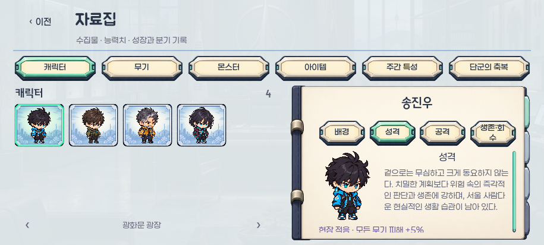
915×412 · qa-archive-characters-1.png · 이미지를 누르면 원본 크기로 열립니다.
자료집 · 각성자 / 공격 스탯
실제 분류·상세 탭의 콘텐츠를 표시.
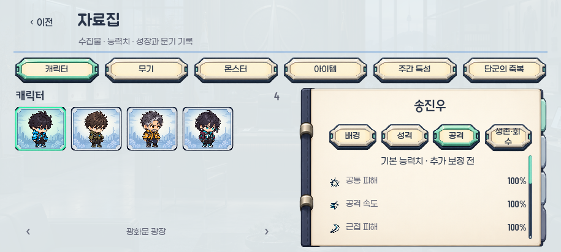
915×412 · qa-archive-characters-2.png · 이미지를 누르면 원본 크기로 열립니다.
자료집 · 각성자 / 생존·회수 스탯
실제 분류·상세 탭의 콘텐츠를 표시.
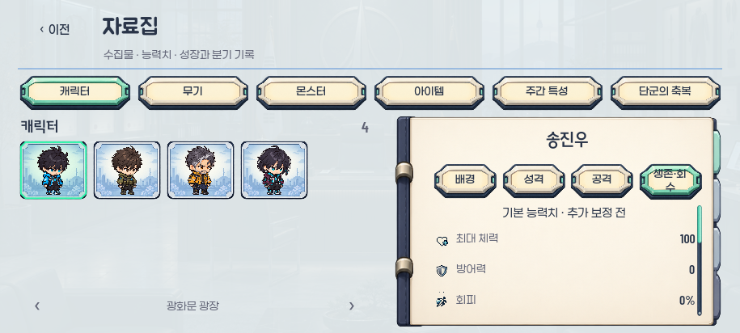
915×412 · qa-archive-characters-3.png · 이미지를 누르면 원본 크기로 열립니다.
자료집 · 무기 / 특징
실제 분류·상세 탭의 콘텐츠를 표시.
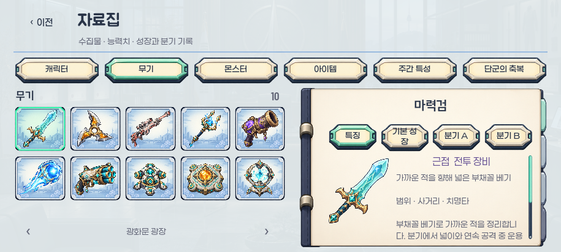
915×412 · qa-archive-weapons-0.png · 이미지를 누르면 원본 크기로 열립니다.
자료집 · 무기 / 기본 성장
실제 분류·상세 탭의 콘텐츠를 표시.
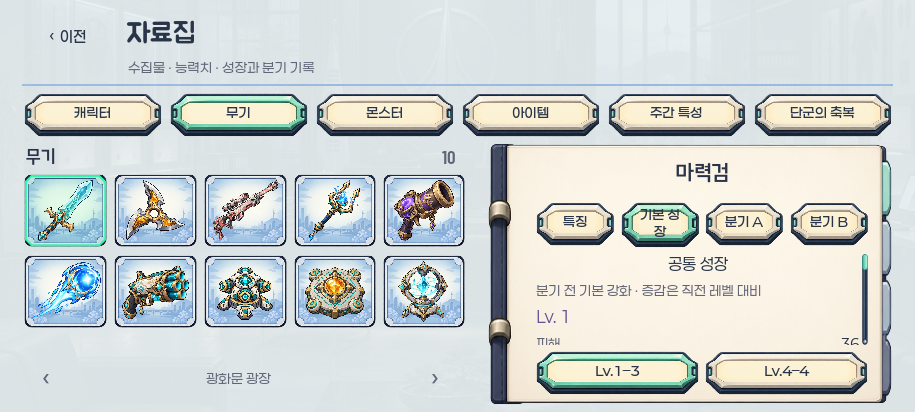
915×412 · qa-archive-weapons-1.png · 이미지를 누르면 원본 크기로 열립니다.
자료집 · 무기 / 분기 A
실제 분류·상세 탭의 콘텐츠를 표시.
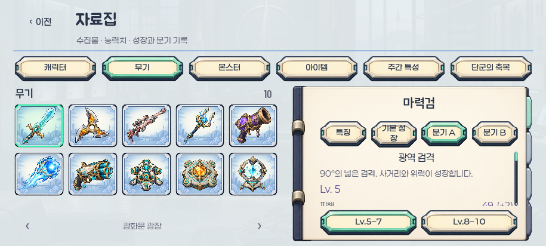
915×412 · qa-archive-weapons-2.png · 이미지를 누르면 원본 크기로 열립니다.
자료집 · 무기 / 분기 B
실제 분류·상세 탭의 콘텐츠를 표시.
915×412 · qa-archive-weapons-3.png · 이미지를 누르면 원본 크기로 열립니다.
자료집 · 몬스터 / 특징
실제 분류·상세 탭의 콘텐츠를 표시.
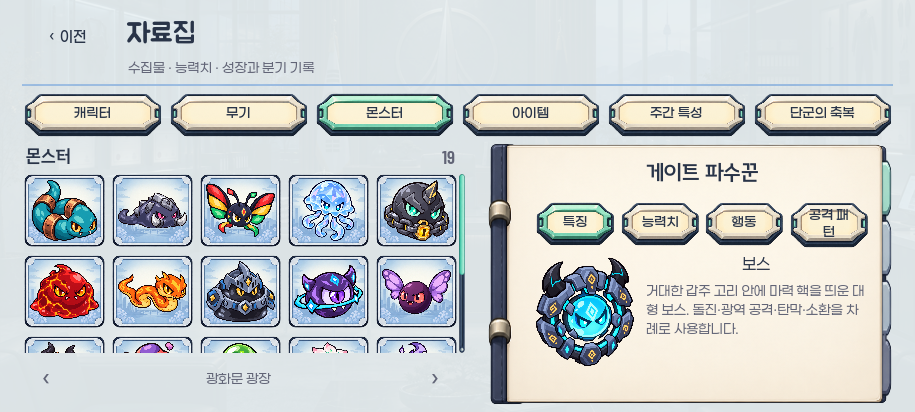
915×412 · qa-archive-enemies-0.png · 이미지를 누르면 원본 크기로 열립니다.
자료집 · 몬스터 / 능력치
실제 분류·상세 탭의 콘텐츠를 표시.
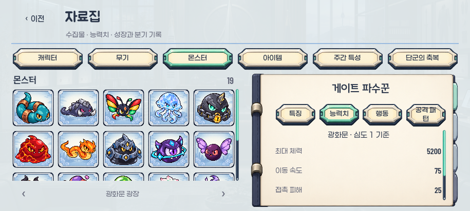
915×412 · qa-archive-enemies-1.png · 이미지를 누르면 원본 크기로 열립니다.
자료집 · 몬스터 / 행동
실제 분류·상세 탭의 콘텐츠를 표시.
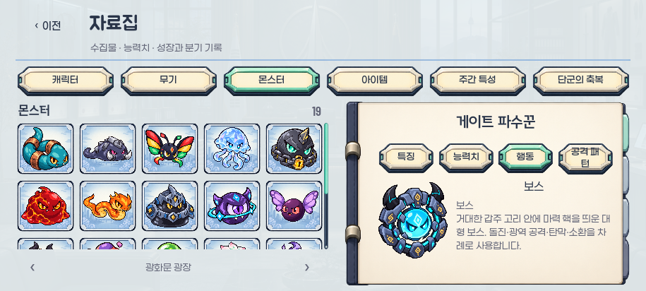
915×412 · qa-archive-enemies-2.png · 이미지를 누르면 원본 크기로 열립니다.
자료집 · 몬스터 / 공격 패턴
실제 분류·상세 탭의 콘텐츠를 표시.
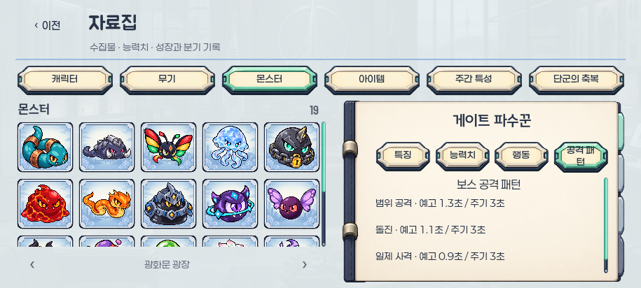
915×412 · qa-archive-enemies-3.png · 이미지를 누르면 원본 크기로 열립니다.
자료집 · 아이템 / 특징
실제 분류·상세 탭의 콘텐츠를 표시.
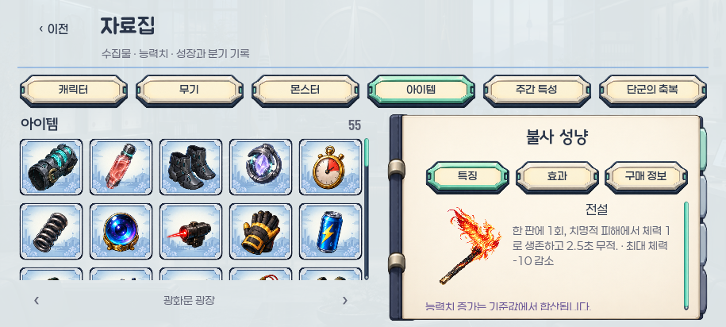
915×412 · qa-archive-items-0.png · 이미지를 누르면 원본 크기로 열립니다.
자료집 · 아이템 / 효과
실제 분류·상세 탭의 콘텐츠를 표시.
915×412 · qa-archive-items-1.png · 이미지를 누르면 원본 크기로 열립니다.
자료집 · 아이템 / 구매 정보
실제 분류·상세 탭의 콘텐츠를 표시.
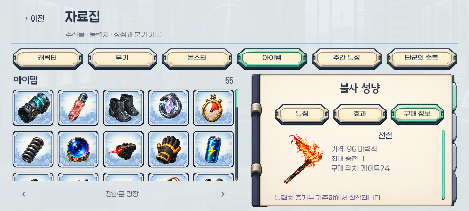
915×412 · qa-archive-items-2.png · 이미지를 누르면 원본 크기로 열립니다.
자료집 · 주간 특성 / 특징
실제 분류·상세 탭의 콘텐츠를 표시.
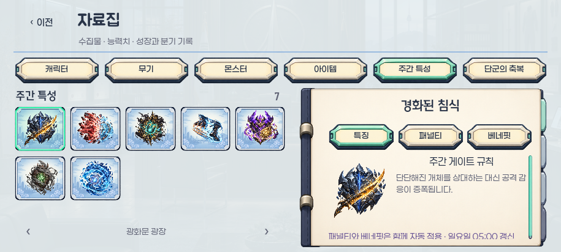
915×412 · qa-archive-weeklyRules-0.png · 이미지를 누르면 원본 크기로 열립니다.
자료집 · 주간 특성 / 패널티
실제 분류·상세 탭의 콘텐츠를 표시.
915×412 · qa-archive-weeklyRules-1.png · 이미지를 누르면 원본 크기로 열립니다.
자료집 · 주간 특성 / 베네핏
실제 분류·상세 탭의 콘텐츠를 표시.
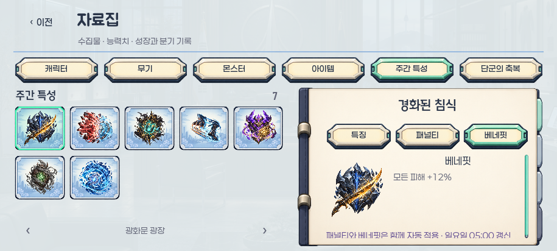
915×412 · qa-archive-weeklyRules-2.png · 이미지를 누르면 원본 크기로 열립니다.
자료집 · 단군의 축복 / 특징
실제 분류·상세 탭의 콘텐츠를 표시.
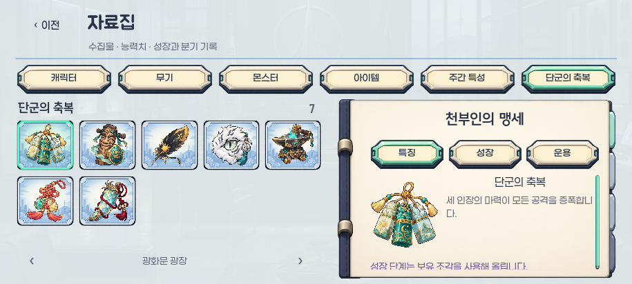
915×412 · qa-archive-blessings-0.png · 이미지를 누르면 원본 크기로 열립니다.
자료집 · 단군의 축복 / 성장
실제 분류·상세 탭의 콘텐츠를 표시.
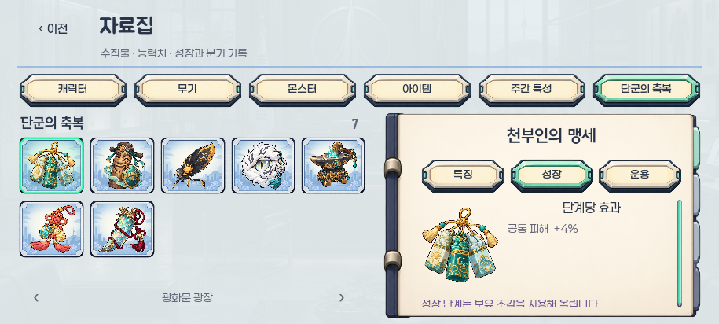
915×412 · qa-archive-blessings-1.png · 이미지를 누르면 원본 크기로 열립니다.
자료집 · 단군의 축복 / 운용
실제 분류·상세 탭의 콘텐츠를 표시.
915×412 · qa-archive-blessings-2.png · 이미지를 누르면 원본 크기로 열립니다.